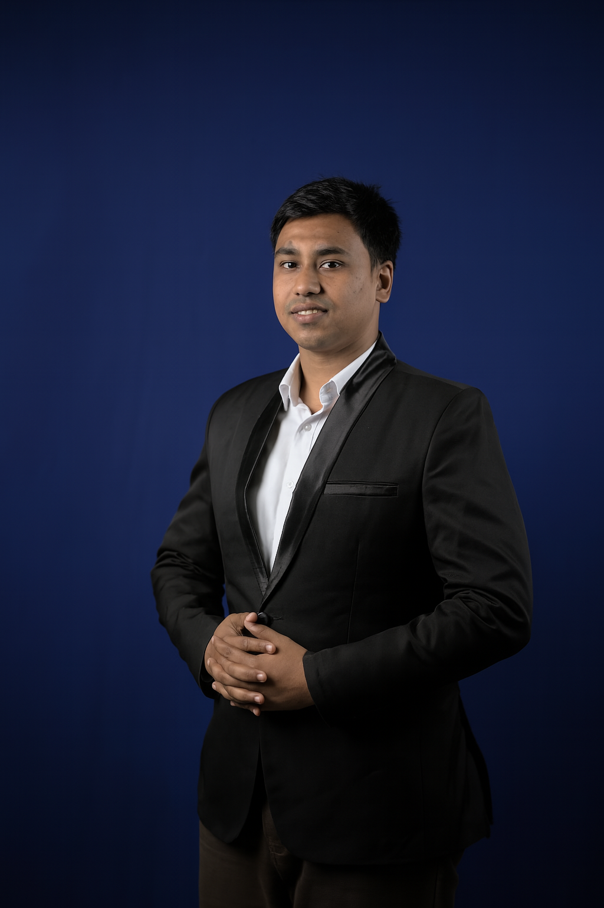

● ● ●
FINANCIAL SYSTEMS · ENTERPRISE
Financial dashboards & tools
Frontend work on financial dashboards, a tax calculator, authentication modules, and business-focused applications.
I'm Md. Mizanur Rahman Rony — a software developer crafting thoughtful digital experiences and dependable enterprise solutions.

I develop applications that balance technical quality, usability, and real-world business needs. My work spans secure financial and enterprise systems, interactive frontend experiences, and cross-functional product delivery.
From building real-time interfaces to sharing AI and VR knowledge, I enjoy turning complex requirements into clear, maintainable experiences.
A few representative projects and contributions from my professional experience.
Frontend work on financial dashboards, a tax calculator, authentication modules, and business-focused applications.
Real-time forms, WebSocket-based functionality, and responsive interfaces for complex digital products.
Contributions to compliance-focused internal software and Anti-Money Laundering (AML) application interfaces.
Responsive interfaces and reusable frontend patterns designed for a global shipping product.
Hands-on Python training, practical data workflows, and VR-oriented development enablement.
Business-facing solutions supporting enterprise operations, maintainability, and compliance-minded implementation.
Note: Commercial and internal systems are described at a high level to respect client and employer confidentiality.
Bangladesh Finance PLC · Dhaka, Bangladesh
Delivering practical technology solutions for enterprise operations, with a focus on reliability, compliance, and collaboration.
Prime Tech Ltd · Natore, Bangladesh
Delivered Python, artificial intelligence, and virtual reality training for a government-funded university research initiative.
Zaag Sys Ltd · Dhaka, Bangladesh
Built financial product interfaces, geolocation forms, and responsive experiences for a global shipping platform.
DataSoft Bangladesh · Dhaka, Bangladesh
Helped implement the frontend of an Anti-Money Laundering solution using Angular.
React · Angular · HTML · CSS · JavaScript · TypeScript · Redux · Material UI · Ant Design
Python · C# · WebSocket · Real-time integration · Application architecture
NumPy · Pandas · TensorFlow · AI / ML · Virtual Reality · Unity3D
Jest · Responsive design · Secure development · Compliance-minded thinking · Teamwork
BRAC University · 2016–2020
AI, ML & VR · IIT Kharagpur & IIT Guwahati
Have a project, an idea, or just want to say hello? My inbox is open.
rmizanurrahman76@gmail.com